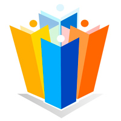

Nosotros
-
¿QUÉ ES CONSULTORES DE EMPRESAS FAMILIARES & ASOCIADOS?
- Es una consultoría que brinda servicios integrales en forma profesional, poniendo a su disposición conocimiento y experiencia en el fortalecimiento, desarrollo y continuidad de Empresas Familiares. Obteniendo una conducción exitosa de su negocio con nuevas ventajas competitivas.
-
MISIÓN
- Somos una empresa dedicada a consultar a familias empresarias mediante la creación de planes y estrategias que permiten fortalecer a su Empresa Familiar, alcanzando con ello seguridad y tranquilidad para la familia, socios y accionistas de la empresa.
-
NUESTRA MISIÓN LA CUMPLIMOS PRESTANDO DOS CLASES DE SERVICIOS
-
Consultoría: Que con base en el análisis y evaluación del estado que guarda la documentación con que se cuenta, identificamos mediante la proyección de escenarios, los riesgos que pongan en peligro la tranquilidad o estabilidad patrimonial de la familia, socios y accionistas de la Empresa Familiar.
Implementación: Mediante el cual se llevan a cabo las actividades específicas para ordenar en un eje de equilibrio los rubros, familia-negocio-patrimonio, a fin de fortalecer, desarrollar y dar continuidad a su Empresa Familiar.
-
Consultoría: Que con base en el análisis y evaluación del estado que guarda la documentación con que se cuenta, identificamos mediante la proyección de escenarios, los riesgos que pongan en peligro la tranquilidad o estabilidad patrimonial de la familia, socios y accionistas de la Empresa Familiar.
-
VISIÓN
- Ser la consultoría líder en desarrollar soluciones integrales, ayudando a las familias empresarias a fortalecer, desarrollar y dar continuidad a su empresa familiar manteniendo la planta productiva y la generación de empleos.
-
FILOSOFÍA
- El mundo es para quienes tienen una idea de negocio y son capaces de desarrollarla hastaconvertirla en la compañía más grande del mundo.
-
LEMA
- “HAZ QUE TRASCIENDA”
-
PRINCIPIOS
- La secrecía de los temas que tratamos, será el principio de confianza que oriente nuestra relación con nuestros asesorados;
- La verdad y la honradez serán la base de todas nuestras relaciones;
- Lealtad hacia nuestra empresa, colaboradores, Empresas Familiares y proveedores sustentando nuestro crecimiento;
- Los objetivos de nuestros asesorados serán los nuestros y haremos lo necesario para alcanzarlos;
- Las relaciones con las Empresas Familiares, nuestros proveedores y colaboradores se guiarán por la cultura “ganar-ganar” (lograr tratos justos que lleven el beneficio para todas las partes de tal manera que se fomente el trabajo en equipo) como consecuencia de nuestras intervenciones;
- Trabajamos de forma socialmente útil, responsable y siempre diferente;
- Creemos que la persona es más importante incluso que la empresa, pues sin aquella no existiría ésta;
- El dinero es muy importante, pero no lo más importante;
- Nunca sacrificaremos la buena reputación por utilidades a corto plazo.
- Entregamos lo mejor de nosotros mismos mediante conocimiento y experiencia.
-
RESPALDO PROFESIONAL
- Contamos con personal especialista en asuntos legales, impuestos, relaciones familiares, planeación estratégica, sucesión, entre otras materias; mismos que cuentan con grado de maestría en las diversas áreas del saber y experiencia profesional probada.
-
POLÍTICA DE CALIDAD
- En Consultores de Empresas Familiares & Asociados nos comprometemos a respetar la individualidad y esencia de cada familia empresaria que consultamos, desarrollando estrategias de acuerdo a las necesidades y aspiraciones de cada una.
-
OBJETIVOS DE CALIDAD
- Incrementar el conocimiento, la dedicación y la sensibilidad como cualidades necesarias para hacer bien nuestro trabajo; añadiremos disciplina para cultivarlas;
- Asegurar la competencia y habilidades del personal que intervienen en la realización de nuestros servicios;
- Incrementar el nivel de satisfacción de nuestros asesorados con relación a los servicios que ofrece la empresa;
- Escuchar más y hablar menos, buscando primero entender para después satisfacer;
- Desarrollar estrategias adecuadas a la razón de ser de la empresa;
- Confiar siempre en las personas, pero sin tolerar engaños.